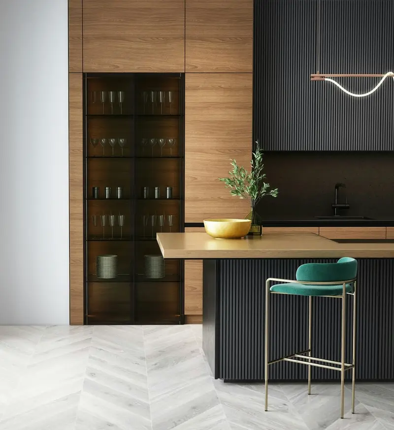

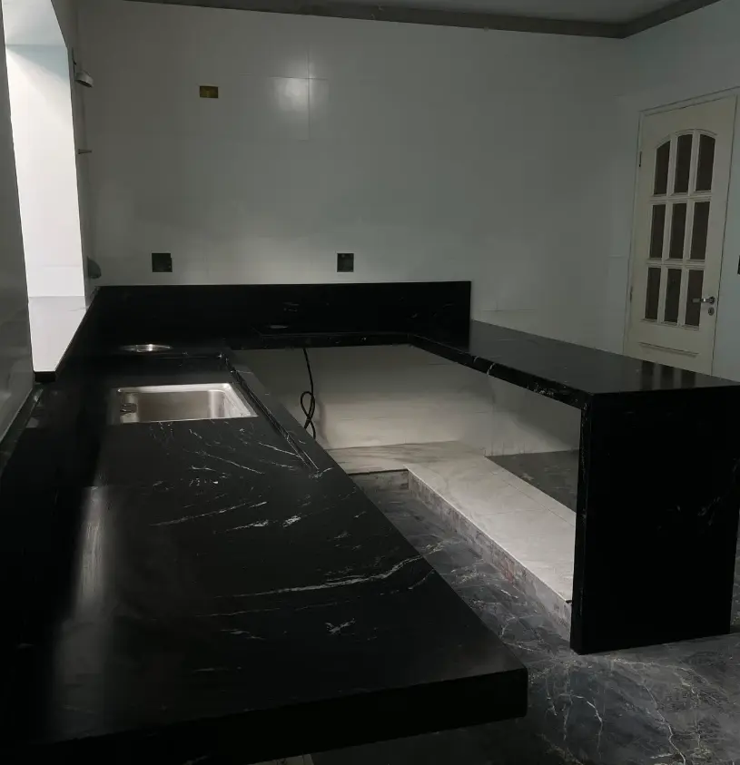
Sua cozinha em pedra, no prazo: pias, bancadas, balcões, cozinhas e banheiros sob medida, feitos pela Japão Granitos & Mármores.
A Japão Granitos & Mármores é uma marmoraria em Piracicaba/SP que faz pias, bancadas, balcões, cozinhas e banheiros em granito, mármore e quartzo, sob medida, para residências e empresas.
Pias de cozinha e de área de serviço em granito ou mármore, com o recorte da cuba feito na medida.
Simular uma piaBancadas sob medida para cozinha, lavanderia ou área gourmet, retas ou em L.
Simular uma bancadaA cozinha inteira na mesma pedra: bancada, pia, ilha e frontão combinando.
Simular uma cozinhaBancadas de banheiro e lavabo em granito ou mármore, no tamanho do seu espaço.
Simular um banheiroBalcões para cozinha americana, comércio ou recepção, com o acabamento de borda que você escolher.
Simular um balcãoCada pedra ao lado de uma obra feita com ela. Passa sozinho, ou use as setas.
1 de 7

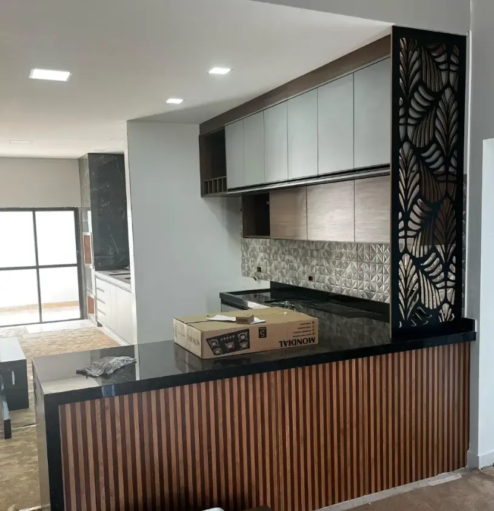


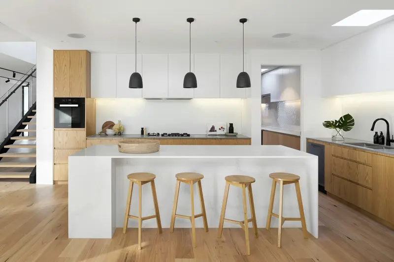
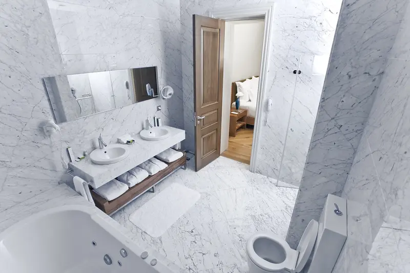
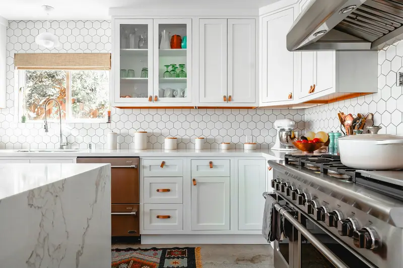


Outras pedras e a disponibilidade de cada uma são confirmadas no orçamento.
Cozinhas, banheiros e bancadas instalados pela Japão em Piracicaba e região.
Mais obras no Instagram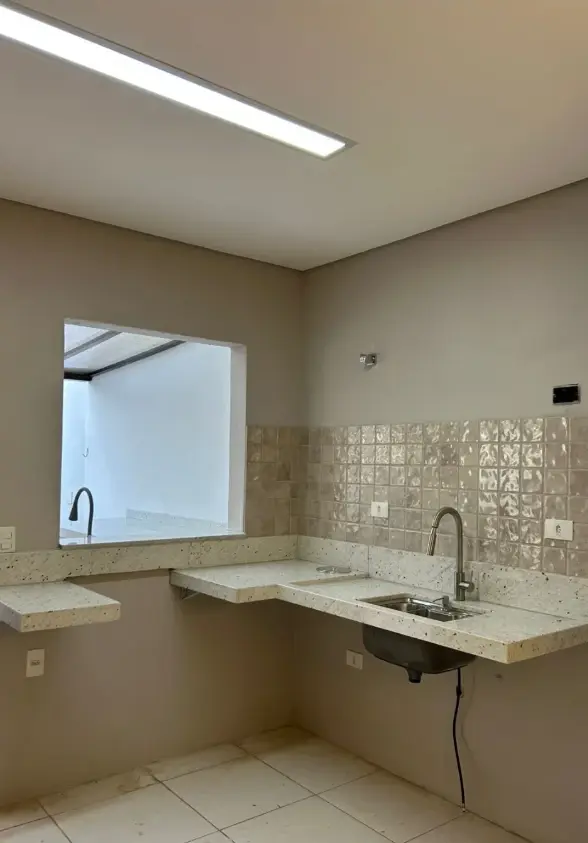
Bancada e pia em Granito Pitaya, numa casa toda feita nessa pedra.
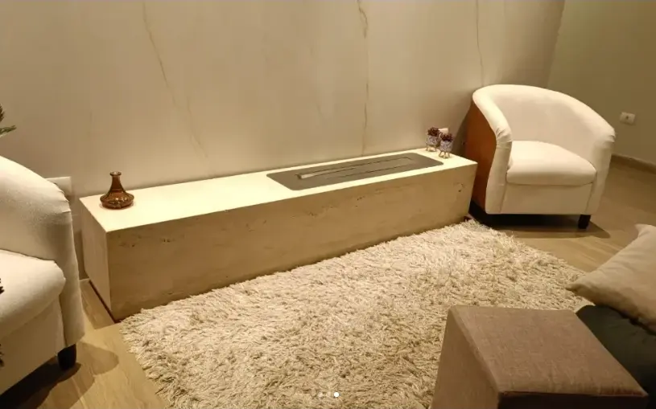
Travertino Romano Bruto, no Residencial Reserva do Engenho.
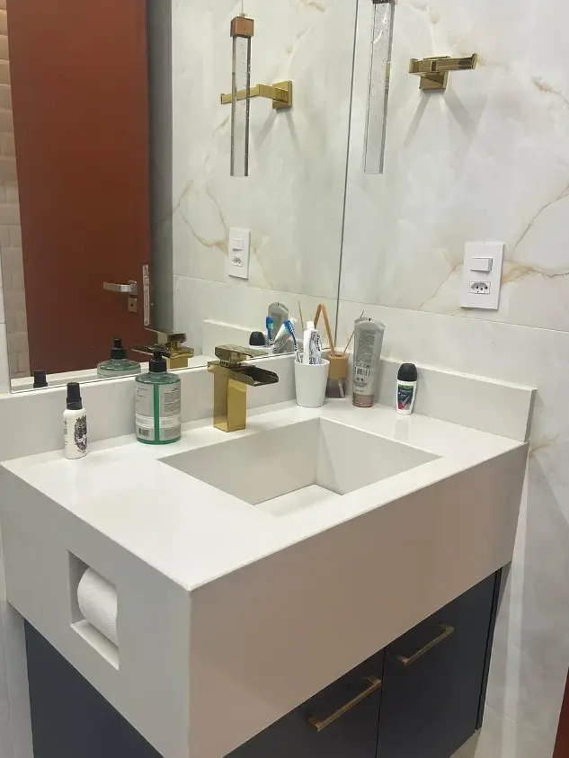
Cuba esculpida e nicho para papel na mesma pedra clara.
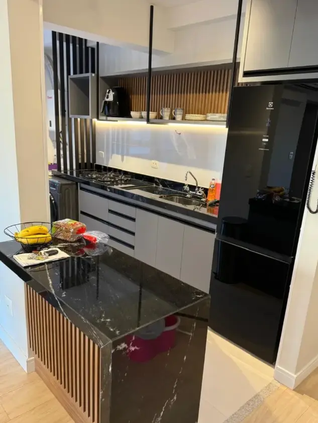
Balcão e bancada em Preto Via Láctea, com gabinete planejado.
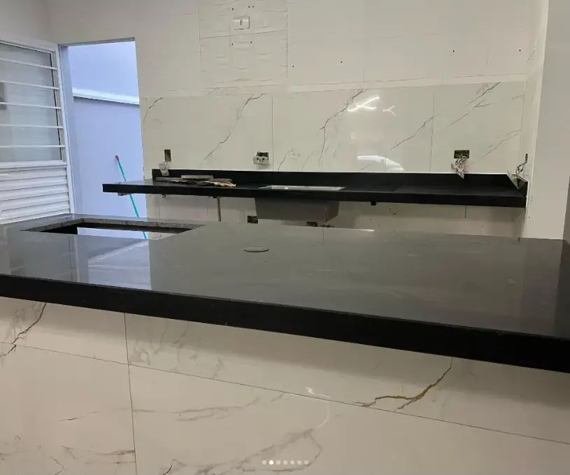
Bancada e ilha com acabamento 45° e espaço para cooktop.
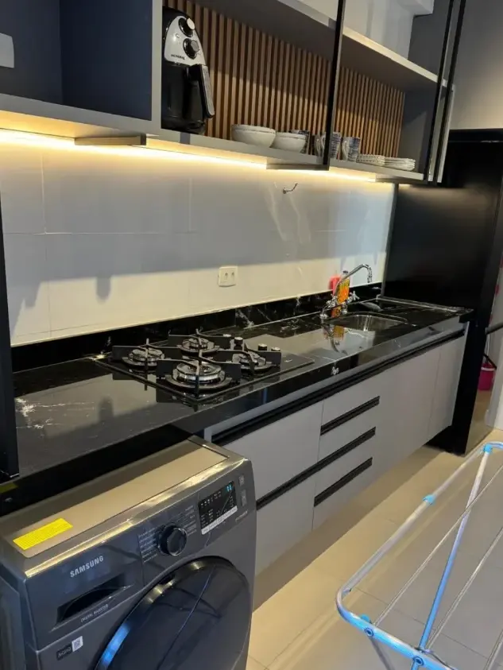
Preto Via Láctea na mesma peça da pia e do cooktop.
5,0
São 133 avaliações, todas somando nota 5,0. E a Japão foi eleita Melhores do Ramo de Marmoraria em Piracicaba pelo 7º ano seguido em 2023.
Resposta rápida no WhatsApp
Os clientes contam que mandam a mensagem e são atendidos logo, pelo próprio WhatsApp, do orçamento até a instalação.
Prazo cumprido
A peça chega na data combinada. É um dos pontos que mais aparecem quando os clientes avaliam a Japão.
Acabamento caprichado
Bordas, recortes e emendas bem feitos são elogiados obra após obra, em cozinhas, banheiros e balcões.
Material de qualidade
Granitos e mármores bonitos e resistentes, segundo quem já instalou as peças em casa.
Resposta rápida no WhatsApp
Os clientes contam que mandam a mensagem e são atendidos logo, pelo próprio WhatsApp, do orçamento até a instalação.
Prazo cumprido
A peça chega na data combinada. É um dos pontos que mais aparecem quando os clientes avaliam a Japão.
Acabamento caprichado
Bordas, recortes e emendas bem feitos são elogiados obra após obra, em cozinhas, banheiros e balcões.
Material de qualidade
Granitos e mármores bonitos e resistentes, segundo quem já instalou as peças em casa.
Você chama no WhatsApp com a ideia, fotos ou medidas do espaço e recebe o orçamento.

Com o orçamento aprovado, as medidas são conferidas no local para a peça sair exata.

A chapa escolhida é cortada e recebe o acabamento de borda combinado.
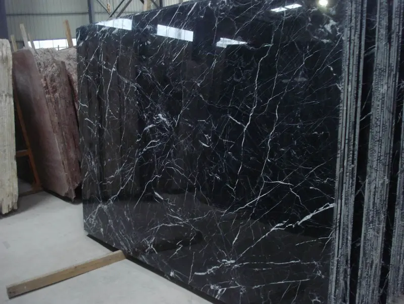
A peça é instalada no dia combinado, pronta para usar.
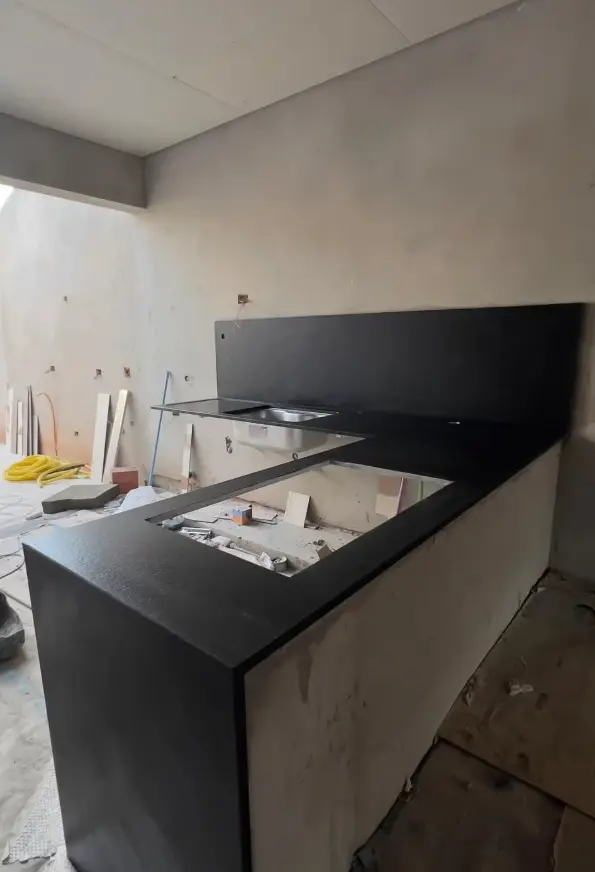
O que os clientes mais perguntam antes de pedir um orçamento.
A Japão Granitos & Mármores fica na R. Antônio Bacchi, 1136 - Paulicéia, Piracicaba - SP. O atendimento é de segunda a sexta, das 8h às 17h45.
A marmoraria fica em Piracicaba/SP, no bairro Paulicéia, e faz projetos para residências e empresas. Para confirmar se a sua obra está na área atendida, mande o endereço pelo WhatsApp (19) 98741-5983.
A Japão faz pias, bancadas, balcões, cozinhas completas, ilhas, lavatórios de banheiro, áreas gourmet, lareiras e peças menores como porta-copos e tábuas, sempre sob medida.
A Japão trabalha com granito, mármore, quartzo e travertino. Entre as pedras já usadas em obras estão Preto São Gabriel, Preto Via Láctea, Granito Pitaya, Verde Ubatuba, Quartzo Branco e Travertino Romano.
Entre os acabamentos já entregues pela Japão estão o 45° com saia, o acabamento slim, a saia de 6 cm e o rebaixo italiano. O acabamento é escolhido no orçamento.
O prazo é combinado no orçamento, de acordo com a peça, a pedra e o acabamento. Prazo cumprido é um dos pontos mais elogiados nas avaliações da Japão no Google.
O orçamento é feito pelo WhatsApp (19) 98741-5983 ou pelo telefone (19) 3422-8887. Você pode mandar a ideia, fotos ou medidas do espaço, ou usar o simulador deste site, que monta a mensagem pronta para o WhatsApp.
Sim. A Japão Granitos & Mármores tem nota 5,0 no Google, com 133 avaliações, e recebeu o prêmio Melhores do Ramo de Marmoraria em Piracicaba pelo 7º ano consecutivo em 2023.